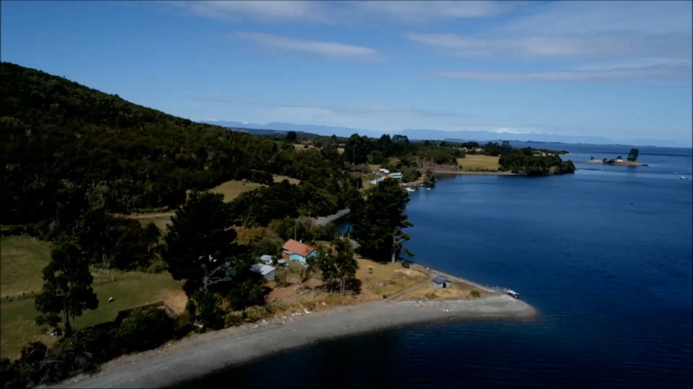
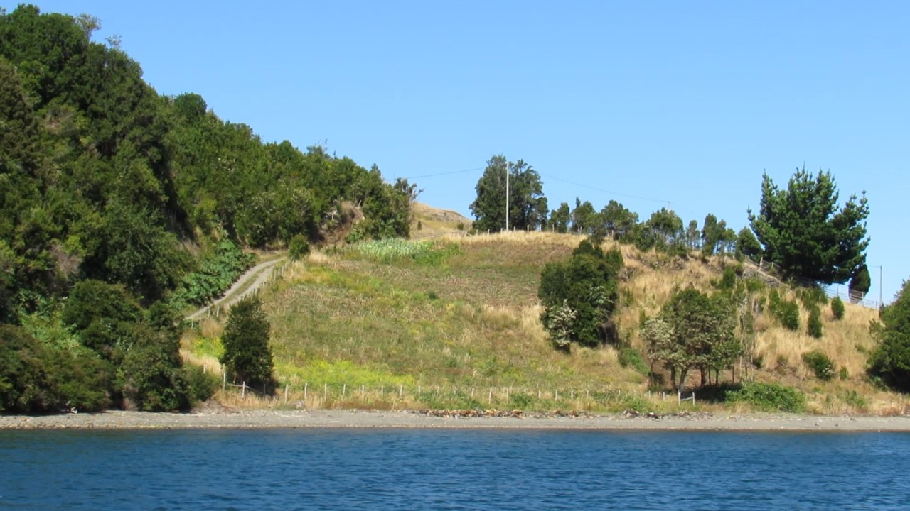
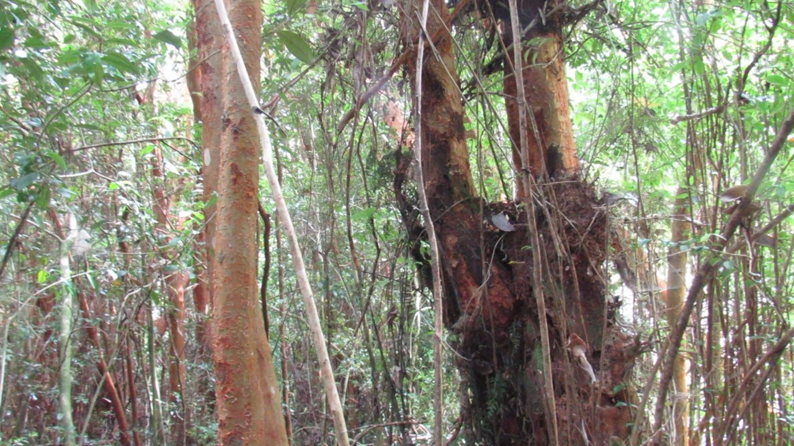

VUELO AÉREO 16:9 • HD
01:45 min
Exclusiva parcela costera en el archipiélago de las Chauques (comuna de Quemchi). Una topografía en suave anfiteatro que nace en 410 metros de playa de piedrecilla fina y asciende con áreas limpias y bosque nativo hacia vistas espectaculares de islas y canales interiores. Un auténtico "barrio náutico" donde la vida se navega, con vertientes de agua pura, tendido eléctrico y señal celular.
Archipiélago de las Chauques, Comuna de Quemchi, Chiloé • Síntesis integral de antecedentes jurídicos, agrimensura, morfología costera y estilo de vida insular en un solo lugar.
Pase el cursor o pulse sobre cualquier indicador superior para enfocar su ficha técnica.
El predio nace a nivel del mar y trepa con suave pendiente hacia la cumbre del cerro, configurando un anfiteatro natural con praderas limpias y bosque templado. Esta elevación progresiva garantiza amplias terrazas edificables con imponentes vistas panorámicas 180° a los canales interiores e islas vecinas.
Extenso frente de playa de piedrecilla fina sobre aguas serenas y protegidas del oleaje oceánico. Ideal para el desembarque directo de lanchas, veleros o kayak, con factibilidad de proyectar rampa privada de varado y fondeo seguro los 365 días del año frente al predio.
Predio 100% saneado con Rol individual emitido por el SII, subdivisión protocolizada ante el SAG y dominio vigente inscrito en el Conservador de Bienes Raíces de Castro. Terreno silvestre sin construcciones previas, libre de gravámenes ni hipotecas, listo para transferencia inmediata directa con dueño.
Seguridad hídrica garantizada mediante múltiples nacientes naturales de agua dulce permanente que brotan al interior del terreno. El tendido de red eléctrica pública cruza directamente el predio facilitando el empalme sin sobrecostos, complementado con óptima señal móvil celular en terreno.
Directamente al frente del terreno, en la isla Puduhuapi, opera una marina náutica habilitada con loteo para socios, muelle e instalaciones de servicio. Las Chauques gozan de un microclima noble que amortigua las heladas, condición ratificada por el vecino viñedo de Viña Montes en isla Añihué.
Emplazado en un auténtico barrio insular donde la movilidad se realiza en lanchas rápidas por canales resguardados: a 20 minutos de navegación desde Tenaún, a solo 4 millas náuticas de la pista de aterrizaje para avionetas en isla Batachauques, y a 10 minutos de la gastronomía típica y palafitos de Mechuque.
Formatos optimizados para alta fidelidad: Pantalla Panorámica 16:9 para computadores y formato Reel 9:16 para smartphones. Visualícelos en modo cine sin salir de la página.


Exploración costera in situ por los 410m de playa y praderas de la parcela.
Dos recorridos reales grabados desde embarcación frente al borde costero y al interior del bosque nativo de arrayanes en Isla Taucolón.


Dos filas panorámicas en movimiento continuo recorriendo sus 410 metros de playa, ensenada, bosque nativo, senderos y vistas hacia el archipiélago de las Chauques. Pasa el cursor para pausar o haz clic en cualquier foto para ampliarla con zoom.
Archipiélago de las Chauques, comuna de Quemchi • Ruta marítima resguardada por aguas calmas interiores.
Acceso combinado ágil y seguro mediante vuelo regular, ruta terrestre pavimentada y navegación protegida en mar interior.
Trato 100% directo y sin intermediarios. Solicite la planimetría completa, rol de avalúo del SII y antecedentes notariales vigentes.
Precio: UF 8.900 • Gestión directa.
Forma de pago: Contado / Vale Vista contra inscripción CBR.